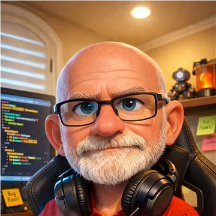

The problem
You're not a beginner. But the ground is shifting.
You've shipped real software for years. But right now:
- AI is moving fast, and it feels like the industry is leaving you behind.
- The rules already changed. Perpetual licenses became a subscription — and now your source code itself is something you rent. Miss a payment and you can lose access to the very applications you and your clients depend on. That's not a risk anymore — that's the terms.
- You know you need to move to AI development. You just don't have a safe way across that doesn't mean abandoning everything you've built.
You shouldn't have to bet your career on one vendor's survival.
The truth nobody's telling you
You're not starting over.
The hard part of building software was never the syntax — it was the judgment. Knowing how to take an application from messy reality to a clean, tested, shipped result. That skill — the lifecycle — is exactly what AI-assisted development still demands, and exactly what newcomers lack.
You already have it. wxKanban hands you the new tools and walks you across.
How the crossing works
A bridge, not a leap.
This isn't hand-waving. It's the exact, proven path we used on wxKanban itself:
- Your data comes with you. We take your proprietary database (HFSQL), generate it to standard SQL, and migrate it cleanly into PostgreSQL, MS SQL, or MySQL — your data exported, transformed, and loaded into a database you own.
- Your logic becomes readable. Your global procedures and window/screen files are converted into clear Markdown — the form AI works with best — so every piece of your application can be analyzed and rebuilt.
- Your screens are captured. Screenshots preserve the exact look of every data screen, so the new application looks and behaves like the one your users already know.
- AI rebuilds it as modern full-stack. With your data, logic, and screens prepared, AI does the heavy lifting — and you keep the judgment, the control, and the ownership.
No leap of faith. No starting from zero. A guided, step-by-step crossing from proprietary lock-in to software you own.
What you land in
Not just a way across — a place to build, and a business to run.
The other side of the bridge isn't an empty stack. It's a working product, built the way professionals build, on foundations you control:
A database you own
Your data lands in PostgreSQL, MS SQL, or MySQL — open, standard, and yours. No proprietary file format, no vendor between you and your own information.
A guided 6-phase lifecycle
Design → Implementation → QA → Human Testing → Beta → Release. You always know the next step, and nothing ships without specs, tests, and sign-off.
AI writes it — you stay in control
AI does the heavy lifting, but every line is fenced to the spec that authored it. You see exactly what AI touched, and you accept or reject it.
No runaway AI
Scope-first means nothing gets built without an approved spec in your database. The tool trains the discipline that keeps AI development from going sideways.
A real consultancy app
A Kanban board, billable time tracking, and one-click PDF invoicing — so you can run your actual business on the very software you just built.
No lock-in, anywhere
Own your auth. Swap AI providers — Gemini, OpenAI, Mistral — whenever you like. Never be held hostage to a single vendor again.
The proof is the product
wxKanban isn't a theory about converting off a proprietary platform. It is one.
This product was a WINDEV application. We converted it — data, procedures, screens, and all — into a modern, AI-built full-stack app on open foundations, using the exact method above. The tool in your hands is the living result of the crossing we're offering to make with you.
If wxKanban could make it across, so can your software. So can you.
Why it works for you
Built for the experienced developer — and the beginner.
Generic AI tools assume you're either a Silicon Valley native or a bootcamp grad memorizing syntax. Neither teaches the thing that actually matters: the judgment to take software from messy reality to shipped, on foundations you own.
wxKanban does. If you're an experienced developer, it turns the instincts you spent years earning into your biggest advantage in the AI era. If you're just starting out, the same guided lifecycle hands you that judgment from day one — so you learn to build like a professional, not just to prompt.
Build on ground you own. Never be held hostage to one vendor again.
Want to go first?
A small hands-on cohort — convert your actual app, with me in the room.
Most people create an account and start on their own. But if you'd rather not go alone, I'm working directly with a small group of developers to convert their own WINDEV application — step by step, the same way wxKanban was converted. Together we walk every stage, sharpen the process, and make sure you can reliably take your app all the way to modern full-stack development.
Your actual application, crossed over with you in the room.
Tell me about the hands-on cohort →Learn it in the open
A new video every few days.
We're publishing an ongoing How-To series — walking through every stage of the conversion and the wxKanban lifecycle, step by step. You'll see exactly how a proprietary app crosses over to AI-built full-stack, before you commit to anything.
New videos drop throughout the month. Get on the list and we'll send each one the moment it's live.

From the founder
wxKanban started life as a WINDEV application.
Everything you're looking at was a proprietary-platform app, and we converted it into a modern, AI-built application on open foundations. We didn't draw a bridge on a map and ask you to walk it — we walked it first, and wxKanban is what came out the other side.
Some of you already know me. I've gone by "Cowboy" in this industry for over 40 years, across every platform shift from mainframe to web to cloud — and I've made every one of those crossings. The developers who thrived were never the ones with the most syntax memorized. They were the ones who understood how software actually gets built, and carried that judgment from one platform to the next. You already have that. It's the hard part, and you've done it.
I've watched this exact thing happen twice before — two different development environments that skilled people built their careers on, then found themselves trapped by. I spent years learning my way out, and helping others do the same. That's why I won't stand by and watch it happen to you: locked to a platform that could change its terms — or close its doors — and take your livelihood, and your clients' apps, down with it. You've worked too hard to bet your career on someone else's survival.
AI has finally changed that.
So I built wxKanban for exactly that developer: a safe, guided way across, on ground you own, without throwing away a single year of skill. It's live now — create an account and start building. And if you'd like to make the crossing with me, hands-on, there's a box for that on the form below.
If that's you — let's talk.
— Andy "Cowboy" Stapleton, founder, wxperts
Get started
Build on ground you own.
Create your account and make the crossing.
Not ready yet? Leave your details instead and I'll send the How-To videos as they go live — and tick the box if you want your own application crossed over with me. About 30 seconds.
Questions first? Reach out to wxperts — we actually answer.